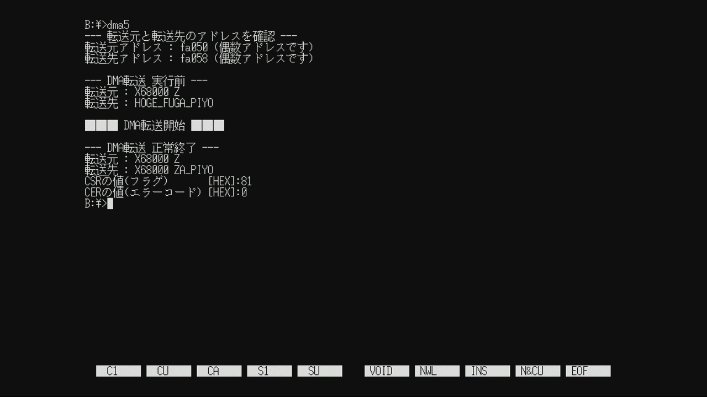
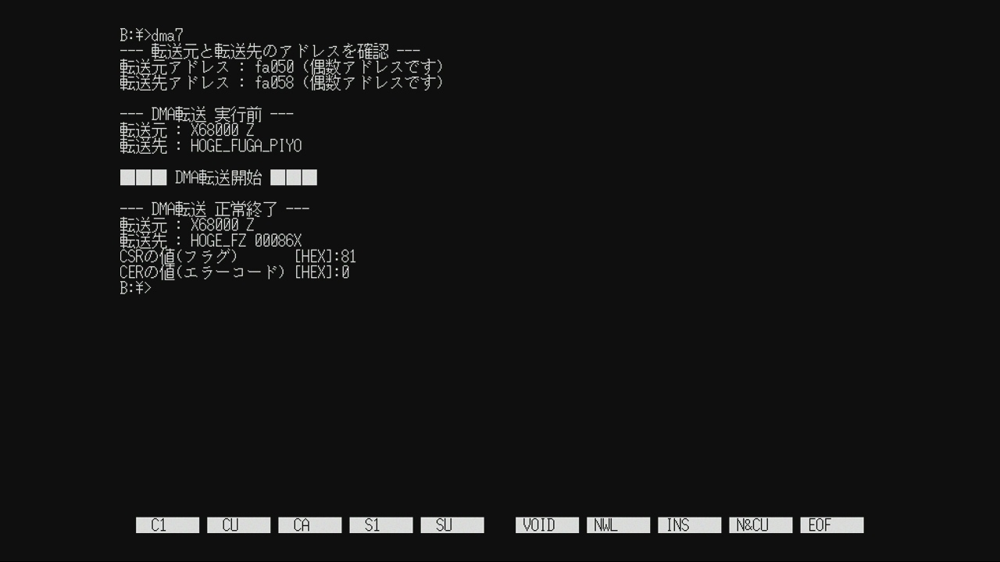
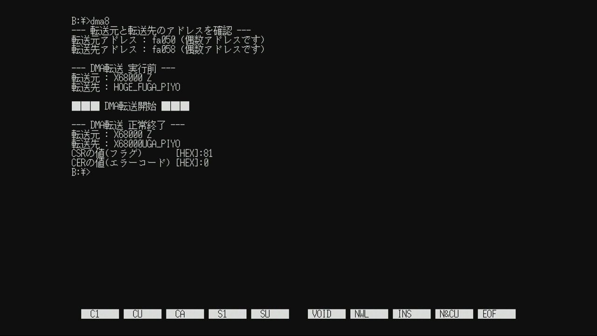

DMA "CPUを介さずデータ転送する魔法" 第4話

2024-03-31 投稿：
前回に引き続き、DMAに関する学習内容のアウトプットをさせていただきます。
よろしければ、お付き合いください。
前回は 各レジスタの詳細を確認しながら具体的な設定値を決めました。
今回は 前回決めた設定値を基にコーディングを行いたいと思います。
DMAC(63450)の使用手順を確認する
コードを書く前に大事なことを確認するのを忘れていました。
DMAC(63450)の使用手順ですね。
Inside X68000に掲載されているサンプルコードをお手本にすると、以下の手順になります。
① CSRの各種フラグをクリア
COC,BTC,NDT,ERR,ACTビットが'1'のままだとエラーになり転送失敗します。
各ビットは'1'を書くとクリアされるのでCSRに対して0xFFを書き込みます。
DMAC使用前には必ずクリアしましょう。
② 各レジスタに設定値を入れる
第3話で決めた値を各レジスタに書き込みます。
転送元、転送先のアドレスとその増減、デバイスポートサイズ、転送サイズと回数は引数で受け取った値を書き込みます。
③ 転送開始
今回はオートリクエストモードなので、CCRのSTR(bit7)に'1'を書き込んで転送を開始します。
④ 転送終了待ち
CSRのCOC(bit7)チャンネル動作完了、もしくはERR(bit4)エラーの何れかが'1'になるまで待機します。
⑤ CSRの各種フラグをクリア
使い終わったら、お後片付けですね。
作法的な意味合いで再度CSRをクリアしておきます。
コーディング～実行してみる
では、前回決めた設定値と、上記使用手順を基にして書いたコードを以下に貼ってみます。
色々な考え方や書き方があると思いますので 1つの作例と思って下さい。
僕の環境はGCC2 + LIBC 1.1.32Aです。
真似してみたい方はご自身の環境に合わせて適当に修正してください。
X-BASICに移植した猛者(もさ)な方も いらっしゃいますw
#include <stdio.h>
#include <iocslib.h>
// 型定義 : 符号(S:あり/U:なし) バイト数(サイズ)
typedef signed char S1;
typedef signed short S2;
typedef signed long S4;
typedef unsigned char U1;
typedef unsigned short U2;
typedef unsigned long U4;
// DMACレジスタ(チャンネル#2)アドレス定義 : 外部非公開(モジュール内でのみ使用可)のため.cで定義している.
#define DMAC2_CSR (*((U1*)0xE84080)) // チャンネルステータスレジスタ (R/W)
#define DMAC2_CER (*((U1*)0xE84081)) // チャンネルエラーレジスタ (R)
#define DMAC2_DCR (*((U1*)0xE84084)) // デバイスコントロールレジスタ (R/W)
#define DMAC2_OCR (*((U1*)0xE84085)) // オペレーションコントロールレジスタ (R/W)
#define DMAC2_SCR (*((U1*)0xE84086)) // シーケンスコントロールレジスタ (R/W)
#define DMAC2_CCR (*((U1*)0xE84087)) // チャンネルコントロールレジスタ (R/W)
#define DMAC2_MTC (*((U2*)0xE8408A)) // メモリトランスファ・カウンタ (R/W)
#define DMAC2_MAR (*((void**)0xE8408C)) // メモリアドレスレジスタ (R/W)
#define DMAC2_DAR (*((void**)0xE84094)) // デバイスアドレスレジスタ (R/W)
#define DMAC2_BTC (*((U2*)0xE8409A)) // ベーストランスファ・カウンタ (R/W)
#define DMAC2_BAR (*((void**)0xE8409C)) // ベースアドレスレジスタ (R/W)
#define DMAC2_NIV (*((U1*)0xE840A5)) // ノーマルインタラプトベクタ (R/W)
#define DMAC2_EIV (*((U1*)0xE840A7)) // エラーインタラプトベクタ (R/W)
#define DMAC2_MFC (*((U1*)0xE840A9)) // メモリファンクションコード (R/W)
#define DMAC2_CPR (*((U1*)0xE840AD)) // チャンネルプライオリティレジスタ (R/W)
#define DMAC2_DFC (*((U1*)0xE840B1)) // デバイスファンクションコード (R/W)
#define DMAC2_BFC (*((U1*)0xE840B9)) // ベースファンクションコード (R/W)
#define DMAC3_GCR (*((U1*)0xE840FF)) // ジェネラルコントロールレジスタ (R/W)
// DMAパラメータ定義 : 外部公開(モジュール外で使用可)
#define DMA_DSP8 0x00 // 8ビットポート
#define DMA_DSP16 0x08 // 16ビットポート(標準設定)
#define DMA_SIZE1 0x01 // 転送サイズ1バイト(MAR→DAR,オートリクエスト最大速度で固定)
#define DMA_SIZE2 0x11 // 転送サイズ2バイト(MAR→DAR,オートリクエスト最大速度で固定)
#define DMA_SIZE4 0x21 // 転送サイズ4バイト(MAR→DAR,オートリクエスト最大速度で固定)
#define DMA_ADDR_FIX 0x00 // 転送毎アドレスは固定
#define DMA_ADDR_INC 0x01 // 転送毎アドレスが増加
#define DMA_ADDR_DEC 0x02 // 転送毎アドレスが減少
// グローバル変数(メモリ)
U1 u1_g_Src[8] = {'X','6', '8', '0', '0', '0', ' ', 'Z'}; // 転送元
U1 u1_g_Dst[14] = {'H', 'O', 'G', 'E', '_', 'F', 'U', 'G', 'A', '_', 'P', 'I', 'Y', 'O'}; // 転送先
// DMA初期化 [DMAC使用手順の①と②]
void vd_g_BSP_DmaInit(void* vdpt_src, // 転送元のアドレス
void* vdpt_dst, // 転送先のアドレス
U1 u1_mac, // 転送毎のアドレス増減設定(転送元)
U1 u1_dac, // 転送毎のアドレス増減設定(転送先)
U1 u1_dsp, // デバイスポートサイズ
U1 u1_size, // 転送サイズ
U2 u2_cnt) // 転送回数
{
// 引数で受け取ったアドレス増減設定をSCRレジスタのビット位置に合わせる
U1 u1_scr = (u1_mac << 2) | u1_dac;
// DMAC使用前に必ずフラグをクリア [DMAC使用手順の①]
DMAC2_CSR = 0xFF;
// 第3話で決めた設定値を各レジスタに書き込む [DMAC使用手順の②]
DMAC2_DCR = u1_dsp; // メモリ転送は通常16ビットポート設定だが、引数により8ビットポートに設定可能
DMAC2_OCR = u1_size; // 固定：MAR→DAR転送, オートリクエスト最大速度 / 引数により可変：転送サイズ
DMAC2_SCR = u1_scr; // MARとDARに設定したアドレスを転送度に増減させるかの設定
DMAC2_CCR = 0x00; // 転送開始ビットのクリア、及び未使用の機能を停止させる
DMAC2_MTC = u2_cnt; // 転送回数
DMAC2_MAR = vdpt_src; // 転送元アドレス
DMAC2_DAR = vdpt_dst; // 転送先アドレス
DMAC2_MFC = 0x05; // MARはスーパーバイザでアクセスで固定
DMAC2_CPR = 0x03; // 優先度最低で固定
DMAC2_DFC = 0x05; // DARはスーパーバイザでアクセスで固定
}
// DMA転送開始 [DMAC使用手順の③]
void vd_g_BSP_DmaStart()
{
DMAC2_CCR |= 0x80;
}
// DMA転送完了待ち (戻値: 0:エラー発生 / 1:転送完了) [DMAC使用手順の④]
U1 u1_g_BSP_DmaWaitCmp()
{
while(!(DMAC2_CSR & 0x90));
return !(DMAC2_CSR & 0x10);
}
// DMAフラグクリア [DMAC使用手順の⑤]
void vd_g_BSP_DmaClearFlag()
{
DMAC2_CSR = 0xFF;
}
// DMAフラグを返す
U1 u1_g_BSP_DmaGetFlag()
{
return (U1)DMAC2_CSR;
}
// DMAエラーコードを返す
U1 u1_g_BSP_DmaGetErrCode()
{
return (U1)DMAC2_CER;
}
// エントリポイント：メイン処理
void main(void)
{
S4 i; // ループカウンタ
S4 s4_ssp = B_SUPER(0); // 保護機能：解除
// DMA初期化 [DMAC使用手順の①と②]
vd_g_BSP_DmaInit(u1_g_Src, // 転送元アドレス
u1_g_Dst, // 転送先アドレス
DMA_ADDR_INC, // 転送毎のアドレス増減設定(転送元)
DMA_ADDR_INC, // 転送毎のアドレス増減設定(転送先)
DMA_DSP16, // デバイスポートサイズ
DMA_SIZE1, // 転送サイズ
8); // 転送回数
printf("--- 転送元と転送先のアドレスを確認 ---\n");
printf("転送元アドレス : %x (%s数アドレスです)\n" , u1_g_Src, (((U4)u1_g_Src) % 2 == 0) ? "偶" : "奇");
printf("転送先アドレス : %x (%s数アドレスです)\n\n", u1_g_Dst, (((U4)u1_g_Dst) % 2 == 0) ? "偶" : "奇");
printf("--- DMA転送 実行前 ---\n");
printf("転送元 : "); for(i= 0; i < 8; i++){ putchar(u1_g_Src[i]);} printf("\n");
printf("転送先 : "); for(i= 0; i < 14; i++){ putchar(u1_g_Dst[i]);} printf("\n");
printf("\n■■■ DMA転送開始 ■■■\n\n");
// DMA転送開始 [DMAC使用手順の③]
vd_g_BSP_DmaStart();
// DMA転送完了待ち [DMAC使用手順の④]
if(u1_g_BSP_DmaWaitCmp()) {
printf("--- DMA転送 正常終了 ---\n"); // 正常終了であることを表示
} else {
printf("--- DMA転送 エラー終了 ---\n"); // エラー終了であることを表示
}
printf("転送元 : "); for(i= 0; i < 8; i++){ putchar(u1_g_Src[i]);} printf("\n");
printf("転送先 : "); for(i= 0; i < 14; i++){ putchar(u1_g_Dst[i]);} printf("\n");
printf("CSRの値(フラグ) [HEX]:%x\n", u1_g_BSP_DmaGetFlag()); // フラグ表示
printf("CERの値(エラーコード) [HEX]:%x\n", u1_g_BSP_DmaGetErrCode()); // エラーコードを表示
// DMAフラグクリア [DMAC使用手順の⑤]
vd_g_BSP_DmaClearFlag();
B_SUPER(s4_ssp); // 保護機能：有効
}
main()内で呼んでいる vd_g_BSP_DmaInit() の引数は 転送元と転送先の先頭アドレス、次に転送元、転送先共に1回転送を行う毎にアドレスが進む(DMA_ADDR_INC)ようにして、その次の引数はデバイスポートサイズですね。
デバイスポートサイズについては 第2話～第3話でも お話した通り、今やっているようなメモリ→メモリ転送において通常は 16ビットポート(DMA_DSP16)に設定しておきます。
そして、その次の引数は転送サイズですね。今は1バイト(DMA_SIZE1)になっています。
最後の引数は転送回数で、今は8にしているので8回の転送動作を行います。
※ 第1話のコードは文字列にしていますが、今回は話の都合上 文字の配列にしており、末尾にnull文字はありません。
さぁ！コンパイルして実行してみましょう！！
実行結果：

DMA転送 正常終了後に、転送先の先頭から8文字が転送元の値で上書きされていますね。
半角文字(1バイト)を、8回(8文字)転送するように指定しているので意図通りの動作をしていますね。
大成功です！！！
引数を変更して動作確認してみる
さて、ここからは vd_g_BSP_DmaInit() に与える引数の値を色々と変更して動作確認してみましょう。
(この関数は引数が7つもあって、ちょっと多い気もしますね。。。w)
・動作確認１
// DMA初期化 [DMAC使用手順の①と②]
vd_g_BSP_DmaInit(u1_g_Src + 7, // 転送元アドレス ★ 変更箇所
u1_g_Dst, // 転送先アドレス
DMA_ADDR_DEC, // 転送毎のアドレス増減設定(転送元) ★ 変更箇所
DMA_ADDR_INC, // 転送毎のアドレス増減設定(転送先)
DMA_DSP16, // デバイスポートサイズ
DMA_SIZE1, // 転送サイズ
8); // 転送回数
転送元のアドレスが元々先頭である'X'の位置だったのが、+7されており末尾である'Z'の位置に変わりました。
そして、転送元は DMA_ADDR_DEC(デクリメント)の設定に変えたので、転送毎にアドレスが1バイト前に戻ります。
つまり、まず'Z'、次に' '(半角スペース)、そのまた次に'0'を...と転送元の末尾から先頭に向かって逆順に転送していくはずです。
変更したら保存してコンパイル～実行してみましょう。
実行結果：
やった～♪ 転送先が Z 00086XA_PIYO となり、期待通りの結果が得られましたね。
動作確認 その2
// DMA初期化 [DMAC使用手順の①と②]
vd_g_BSP_DmaInit(u1_g_Src, // 転送元アドレス
u1_g_Dst + 13, // 転送先アドレス ★ 変更箇所
DMA_ADDR_INC, // 転送毎のアドレス増減設定(転送元)
DMA_ADDR_DEC, // 転送毎のアドレス増減設定(転送先) ★ 変更箇所
DMA_DSP16, // デバイスポートサイズ
DMA_SIZE1, // 転送サイズ
8); // 転送回数
今度は、転送元に関しては 配列の先頭アドレスかつ、DMA_ADDR_INC(インクリメント)なので、配列の先頭から順に1バイトづつ進みます。
転送先は、+13しているので、末尾の'O'を指し、DMA_ADDR_DEC(デクリメント)に変更したので、転送毎に1バイトづつ前に移動します。
変更したら保存してコンパイル～実行してみましょう。
実行結果：

よしよし。こちらも期待通りの結果ですね♪
動作確認 その3
// DMA初期化 [DMAC使用手順の①と②]
vd_g_BSP_DmaInit(u1_g_Src, // 転送元アドレス
u1_g_Dst, // 転送先アドレス
DMA_ADDR_INC, // 転送毎のアドレス増減設定(転送元)
DMA_ADDR_INC, // 転送毎のアドレス増減設定(転送先)
DMA_DSP16, // デバイスポートサイズ
DMA_SIZE2, // 転送サイズ ★ 変更箇所
3); // 転送回数 ★ 変更箇所
転送元と転送先アドレスは普通に配列の先頭、どちらも DMA_ADDR_INC(インクリメント)に設定。
そして第6引数の転送サイズを DMA_SIZE2(2バイト)に変更、第7引数の転送回数を3に変更してみます。
この場合、転送サイズを2バイトにしたので、1回転送を行う度にアドレスが2バイト移動していきます。
実行結果：

よしよし。こちらも期待通りの結果ですね♪
動作確認 その4
さて、最後に少し変わった事をやってみようと思います。
vd_g_BSP_DmaInit()の引数は、先ほどの"動作確認 その3"と同じで2バイトの転送を3回行うように設定します。
// DMA初期化 [DMAC使用手順の①と②]
vd_g_BSP_DmaInit(u1_g_Src, // 転送元アドレス
u1_g_Dst, // 転送先アドレス
DMA_ADDR_INC, // 転送毎のアドレス増減設定(転送元)
DMA_ADDR_INC, // 転送毎のアドレス増減設定(転送先)
DMA_DSP16, // デバイスポートサイズ
DMA_SIZE2, // 転送サイズ ★ 変更箇所
3); // 転送回数 ★ 変更箇所
そして、u1_g_Src[8]定義している行の上にダミーの変数(u1_g_dummy[1])を追加します。
U1 u1_g_dummy[1] = {'#'}; // ★ 追加箇所：ダミー変数
U1 u1_g_Src[8] = {'X','6', '8', '0', '0', '0', ' ', 'Z'}; // 転送元
U1 u1_g_Dst[14] = {'H', 'O', 'G', 'E', '_', 'F', 'U', 'G', 'A', '_', 'P', 'I', 'Y', 'O'}; // 転送先
さらに、このダミーの変数は何処かで使わないとコンパイラに消されてしまうので、main()の最後に以下の処理を追加します。
B_SUPER(s4_ssp); // 保護機能：有効
printf("\nダミー変数がコンパイラに消されないように使っておきます→ "); // ★ 追加箇所：最適化防止
putchar(u1_g_dummy[0]); // ★ 追加箇所：最適化防止
printf("\n"); // ★ 追加箇所：最適化防止
}
こうする事で、転送元メモリである u1_g_Srcと、転送先メモリである u1_g_Dstを奇数番地のアドレスに配置します。(※1)
この状態で、2バイトの転送を行い(4バイトでも可)、アドレスエラーを意図的に発生させて CSRのERRビットと CERのERROR CODEビットの値を確認してみましょう。(※2)
コードを変更したら保存してコンパイル～実行してみます。
実行結果：

ふむ、(僕の環境では)狙い通り転送元アドレスと転送先アドレスが奇数番地に配置されていますね。
奇数番地の2バイト転送なのでアドレスエラーとなり、転送は行われずに値はそのままのはず・・・ん？
ええ～っ？！
・・・何か転送先の値がヘンテコになってますね。
転送元の値まで変化してしまいました。(厳密には、転送元というより転送先に指定したアドレスと隣接している部分が破壊されたと考えるべき？)
しかも CSRは0x81になっており、ビット0のPCS(PCL端子関連)が'1'なのは無視するとして、上位ニブルが0x8って事は、COCが'1'で普通にチャンネル動作完了になっており、さらにERRビットが'0'でエラー無しになってますね・・・。
あとCERのエラーコードも 0x00 のエラー無しになっています。
いやー、何だこれ？って事で急遽調査しました。
結果は以下になります。
X68000 Z(FW.ver.1.6.2)はDMA転送エラー時の挙動が実機と異なる
はいッ！！ 読む気なくなる長文ですね(爆
要約しますと、実機と異なりZは(ver.1.6.2 現在)DMA転送エラー時に変な動きしている事が結構ありますよ～っと。
あと、アドレスエラー以外の転送エラーでもERRビットが立ってなかったりERROR CODEがエラーなしになってたりする場合があります。
(XM6TypeGもアドレスエラーの場合に何故かカウントエラーを返してきますが、CERのERRビットは'1'なので、ちゃんとエラー発生した事を教えてくれてます)
これについて対策は一応可能で、ハードウェアでガードしてくれないなら ソフトウェアでのガード処理を入れれば良いかと。
対策しない方針を取ったとしても、ZのDMACは現状このように振舞う事だけは覚えておいた方が良いかな～と思ったりしてます。
と、いう訳で この辺をちょっと気を付けながら使う事にしましょう。
(※1)
コンパイラや、その他環境の違いによっては上手く奇数番地に配置されないかもです。
この方法は少し微妙に感じていまして、本当は上記の調査の投稿にてコメントで hoge_hogeさんが教えてくれたように、リンカの指定を行った方が確実だと思います。
しかしながら、現状の僕のスキルでは難しくて、一旦あきらめました。
(※2)
Inside X68000には"ワードやロングワードの転送を奇数番地から行おうとした場合にアドレスエラーとなります"と記載されています。
転送元"のみ"奇数番地だとマズいと言っているようにも解釈できる文言なので、先の調査結果に加えて、転送元のみ奇数のパターンと転送先のみ奇数のパターンで調査してみました。
結果としては、転送元か転送先のどちらか、または両方が奇数アドレスで1バイト以外の転送を行おうとした場合、エラー若しくは変な挙動を取ります。
※ 何を、どこから、どれだけ、どのように、どこに転送するかで結果が変わる可能性もあると思いますので参考程度にお願いします。(特に転送する/しない,値の破壊について)
・CompactXVI
転送元(MAR)のみ奇数 → COC=1,ERR=1,ERROR CODE=0x05 (00101:アドレスエラー[メモリアドレス/メモリカウンタ]) 転送なし
転送先(DAR)のみ奇数 → COC=1,ERR=1,ERROR CODE=0x06 (00110:アドレスエラー[デバイスアドレス]) 転送なし
・X68000 Z ver.1.6.2
転送元(MAR)のみ奇数 → COC=1,ERR=0,ERROR CODE=0x00 (00000:エラーなし) 転送先の値を破損
転送先(DAR)のみ奇数 → COC=1,ERR=0,ERROR CODE=0x00 (00000:エラーなし) 転送元と転送先の値を破損
・XM6 TypeG ver.3.36
転送元(MAR)のみ奇数 → COC=0,ERR=1,ERROR CODE=0x0C (01100:カウントエラー) 転送先の値を破損
転送先(DAR)のみ奇数 → COC=0,ERR=1,ERROR CODE=0x0C (01100:カウントエラー) 転送なし
XM6 TypeGで転送先が壊れるのは良いとして、Zでは転送元の値までも破壊してしまう挙動が気になりますね。
(転送先は元々何かの値で上書きしようとしていた領域ですが、それ以外の領域は書き込んじゃダメかと)
次回予告
ここまでで、複数ブロック転送はサポートしていないものの、わりと実用的な関数群を作る事ができたと思います。
次回はデバイスポートサイズについて、これまで16ビットポートでしたが、8ビットポートにすると一体どうなるのか試してみたいと思います。
Link
・第1話 はこちら
・第2話 はこちら
・第3話 はこちら
・第4話 はこちら
・第5話 はこちら ← NEXT
Archive Note
こちらは X68000 Z コミュニティサイト(Z-CLUB) 過去投稿を修正加筆したものです。
基本的に当時の状況に基づいた内容になっています。
元投稿：https://dev.zuiki.com/project-z/community/post/detail/1002
[EOF]